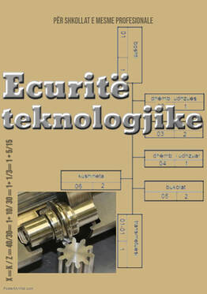

Ecuritë Teknologjike
Libri Ecuritë teknologjike të proceseve mekanike u kushtohet nxënësve te kl. XII drejtimi i makinerisë. Është hartuar në bazë të planprogramit nga MASHT-i.
Qëllimi i këtij materiali është që të përshkruaj prodhimtarinë industriale dhe degët e saj. Kryesisht atë se çka përfshinë industria metalike dhe organizimi i kësaj industrie.
Në 5 kapitujt është shtjelluar ecuria teknologjike e punimit te metalit. Duke filluar nga përzgjedhja e gjysëmfabrikateve, mënyrat (metodat) e punimit, kontrollit, mënyrat e grupimit dhe në fund ecurinë teknologjike për montimin e këtyre detaleve (grup detalesh) në mes veti duke krijuar makineri, pajisje, automjete, etj.
Në kapitullin e 6 në mënyrë te përgjithshme (pa u ndalur ne hollësi) është përshkruar funksionimi i makinave metalprerëse me drejtim numerik (MM me DN).